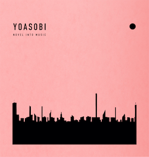
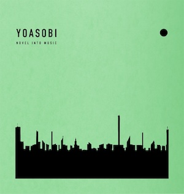
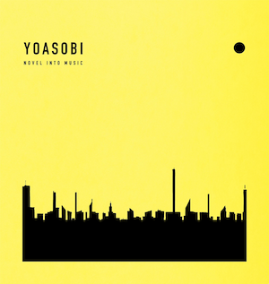
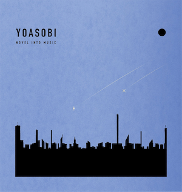

小说化为音乐的二人组，从深夜开始的世界之旅
YOASOBI（夜遊び）的团名源自日语「夜遊ぶ」，意为「在夜晚嬉戏」。Ayase 将两人的个人音乐事业定义为「白天的活动」，而 YOASOBI 则是属于夜晚的创作——在深夜的安静中，把文字世界的故事翻译成声音。
这不是一般意义上的「给小说写主题曲」。YOASOBI 的创作流程是：从 monogatary.com（Sony Music 旗下的小说投稿平台）或合作作家的短篇、信件、剧本甚至社交媒体帖子中提取叙事内核，由 Ayase 完成词曲编全部制作，ikura 以人声演绎故事中的情感。
如果一首歌的故事原型不是虚构作品，它就不会被归入 YOASOBI 的正式作品——这条纪律从结成第一天开始，至今从未被打破。
「每一首歌都是一篇小说的声音化。我们不是在写歌，我们是在给故事一个全新的形态——让读到这个故事的人，可以用耳朵重新经历一遍。」—— Ayase, YOASOBI
高中时期开始乐队活动，解散后转向 Vocaloid 作曲。因胃溃疡住院期间在医院里用初音未来创作，在 Niconico 和 YouTube 积累人气——「Last Resort」是他的突破之作。加入 YOASOBI 之前，已是 Vocaloid 圈的代表性创作者之一。
Ayase 负责 YOASOBI 全部的词曲、编曲和制作。他深受 Vocaloid 音乐和 J-Pop 双重影响，这解释了 YOASOBI 音乐中那种独特的「快节奏 + 复杂结构」——既像 Vocaloid 曲的密集信息，又有流行乐的旋律钩子。
14岁开始街头吉他弹唱，16岁进入 Sony Music 的新人培训项目。作为本名「幾田莉拉」，她同时以独立创作歌手身份活动，发行了个人 EP《Rerise》和《Jukebox》。同时是不插电音乐组合 Plusonica 的成员（2017-2021）。
Ayase 在 Instagram 上听到 ikura 翻唱爱缪的《不听摇滚的你》后联系她——这段翻唱的质感让他确信找到了 YOASOBI 的声音。ikura 的嗓音干净、明亮、有穿透力，却能在演绎悲伤故事时展现出惊人的脆弱感。




「偶像」（アイドル）是 YOASOBI 的第20首单曲，2023年4月12日作为动画《我推的孩子》片头曲发行。歌曲基于漫画家赤坂明（《辉夜大小姐想让我告白》作者）撰写的短篇小说《45510》——一个关于偶像产业阴暗面的故事。
这首歌在商业上的成功是史无前例的：在日本 Oricon 合算单曲榜和 Billboard Japan Hot 100 双双登顶，后者以22周（非连续）冠军打破了 Official 髭男dism「Subtitle」此前13周的纪录。295天内获得 RIAJ 流媒体钻石认证——史上最快。
全球层面更为惊人。「偶像」在 Billboard Global 200 排名第七，在 Billboard Global Excl. US 登顶第一——这是日语歌曲史上的首次。MV 在35天内达到1亿次观看，创下日本艺人最快破亿纪录。IFPI 将「偶像」列为2023年全球第19畅销歌曲，等效流媒体收入达10.1亿次。
但「偶像」的意义超越了数据。它证明了日语流行音乐可以突破语言壁垒，不需要翻译成英语也能触达全球听众。这首歌的歌词本身就是一个关于偶像产业「表与里」的尖锐批判——用流行乐最甜美的外壳包裹最辛辣的内容。这种反差，正是 YOASOBI「小说化音乐」理念最极致的体现。
多家媒体将 YOASOBI 称为「2020年代J-Pop 的代表」和「令和时代的音乐符号」，这种评价并非夸张。在他们之前，日语音乐在海外的认知主要局限于动漫爱好者圈子；YOASOBI 通过「Idol」证明了一首日语歌可以在不翻译的情况下登顶全球榜单。
这种突破不是偶然的。从2021年的《E-SIDE》英文版 EP 开始系统性地进入英语市场，到2023年受邀为 Coldplay 东京开场，再到2024年登陆 Coachella 和 Lollapalooza 两大美国顶级音乐节——YOASOBI 的全球化路径是有意识、有节奏的战略执行。
YOASOBI 的出现不只是一个音乐组合的成功故事。它是一个关于 创作方法论如何重新定义音乐边界 的案例。「小说化为音乐」这个看似简单的概念，实际上改变了日本流行音乐的叙事方式——让歌曲不再只是情感的载体，而成为故事的容器。
Ayase 的作曲风格——快节奏、复杂的段落变化、Vocaloid 式的密集信息——与 ikura 温暖而有穿透力的嗓音形成了独特的化学反应。这种「高密度作曲 + 温暖人声」的组合在 J-Pop 中几乎没有先例。它既继承了 Vocaloid 音乐的基因（BPM 高、信息密度大、旋律跳跃），又突破了 Vocaloid 圈的封闭性。
「Idol」的全球成功证明了一件重要的事：语言的壁垒不是音乐传播的终极限制。当故事足够好、演绎足够有力，一首日语歌可以在洛杉矶的 Coachella 大舞台引发万人大合唱。YOASOBI 为后来者开辟了一条新的路径——不需要迎合英语市场，而是让世界来听日语歌。
2025年「劇上」的发行标志着另一个突破：Ayase 首次在 YOASOBI 的歌曲中演唱。这首歌是 YOASOBI 首次为真人电视剧创作主题曲，也是首次拍摄真人MV。Ayase 从幕后走向台前，意味着 YOASOBI 的「单元」概念正在扩展——它不再只是「作曲家+歌手」的二元结构，而是一个更灵活的创作共同体。
从2019年深夜的一条 Instagram 私信，到2026年即将发行的《THE BOOK For,》——The Book 系列的终结，也是一个篇章的完结。但「Never Ending Stories」巡演的命名暗示了一切：故事不会结束，因为夜遊び还在继续。
夜遊び——在夜晚嬉戏。这是他们给自己起的名字。
六年后的世界证明：最深夜的创作，也能抵达最广泛的听众。